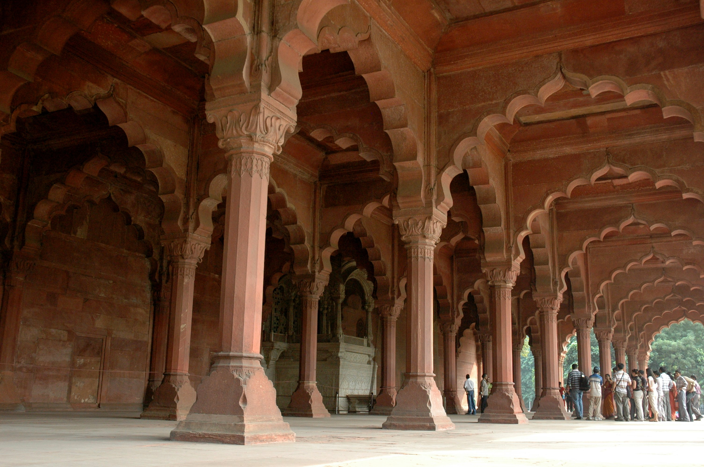
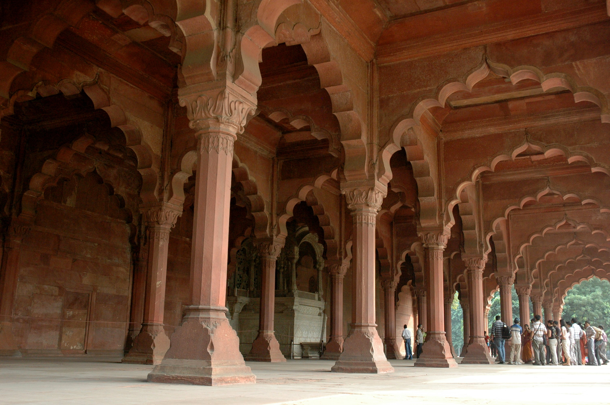
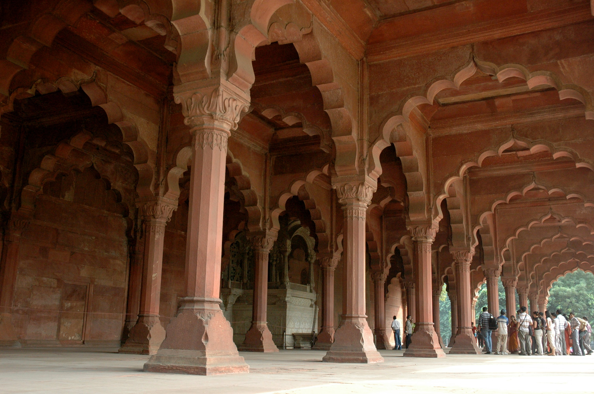

 

Shahjahanbad, Persian, Timuri and Indian Architectural Styles, Red Sandstone Architecture, Moti Masjid. Situated in the centre of the historic city of New Delhi, the Red Fort was built by emperor Shah Jahan when he shifted his capital from Agra to Delhi, or what was known as Shahjahanabad at that time. The fort became the political hub of the Mughals. Under Shah Jahan, Mughal art and architecture reached it's zenith, and the Red Fort is the perfect example of that. One can see the blending of Indo-Islamic, Timurid, Hindu and Persian forms of architecture in several facets of the Red Fort. It's made up of red sand stone and houses several other smaller buildings such as the private pavallions, the Diwan-i-aam, the Diwan-i-khas. The Red Fort is one of the most popular UNESO World Heritage Sites in India and is managed directly by the Archaeological Survey of India.